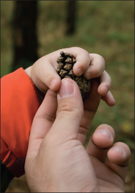

Country Crafts
“Happiness is not in the mere possession of money; it lies in the joy of achievement, in the thrill of the creative effort.”
—President Franklin Delano Roosevelt
Springtime lends itself to creativity. As new flowers push through the soil and birds begin to gather materials for their nests, you may find yourself eager to start new projects, too. It is a busy season; days are filled with preparing gardens and airing out the house, weekends are packed with weddings and graduations. But a rainy afternoon or a quiet Sunday may give you the opportunity for crafting you crave. Here is a smattering of ideas to give your inspiration some direction, whether you’re creating a gift, an accent for your home, or a keepsake for a special celebration.
Springtime Wreath
Grapevines make an attractive and natural base for this welcoming wreath. Begin shaping the vines soon after cutting. If you do need to store them for more than a day before using them, remove the leaves and soak the vines for several hours before beginning the wreath to make them more pliable.
• Grapevines
• Decoration such as moss, baby’s breath, etc.
• Florist tape
1. Cut several lengths of vine, keeping them as long as you can manage. Remove the leaves, but don’t trim the tendrils.
2. Start with the thicker end of the vine and form a circle. Then begin coiling a second circle, winding and twisting it around the first. Continue until you are almost at the end of the vine and then wind the end around and around, using the vine tendrils or florist tape to secure the end. Add additional vines, winding them around the first circle and tucking the ends into the center.
3. Add moss, baby’s breath, yarrow, ferns, feathers, decorative grasses, ribbon, etc. Tuck the ends into the vines and use florist tape as needed for added security.
Blown Eggs
If you want to keep your egg creations to display year after year, blow out the eggs before decorating them. Blown eggs are more fragile than hardboiled eggs, but they won’t ever spoil.
• Eggs
• Needle
• Toothpick
• Tiny straw or a syringe
To dry flowers or grasses for use in wreaths or other decorations, cut them slightly before they reach their peak, leaving long stems. Tie the stems together and hang them upside down for several weeks in a dry, dark area.
1. Use a needle to poke one hole on each end of the egg. Insert a toothpick and wiggle it around to help widen the holes slightly. Stick the needle back into one hole and move it around inside the egg until the yolk breaks.
2. Insert the straw into one hole and blow through it until the insides of the egg drain out, or use a syringe to draw out the egg. Rinse thoroughly to wash away any remaining egg residue.
3. Bake the eggshell at 400ºF for ten minutes.
PLANTS THAT DRY WELL FOR DECORATIVE USE
| Flowers | Grasses | Herbs |
| Acrolinium, Baby’s breath, Bachelor’s button, Bells of Ireland, Cockscomb, Coneflower, Delphinium, Foxglove, Globe amaranth, Goldenrod, Heather, Hydrangea, Larkspur, Statice, Strawflower, Yarrow | Bristly foxtail, Cattails, Eulalia grass, Fountain grass, Hare’s-tail grass, Indian grass, Northern sea oats, Pampas grass, Plume grass, Quaking grass, Spike grass, Squirrel-tail grass, Switch grass, Wheatgrass | Chamomile, Chives, Dill, Eucalyptus, Fennel, Lavender, Lemongrass, Rosemary, Sage, St. John’s wort, Thyme |
Leaf- or Flower-Stenciled Eggs
These eggs make a stunning centerpiece when displayed on a plate or in a basket. If you intend to eat the eggs later, use only food coloring to dye them. However, if you are using blown eggs or you do not intend to eat the eggs, fabric dye, or other natural dyes, and stencil paint will produce richer, more vibrant colors.
• Food coloring, fabric dye, or other natural dye (prepared accordingly)
• Large white eggs
• White glue
• Leaves, ferns, or small flowers
• Small paintbrush
• Wide, stiff paintbrush
• Stencil paint (if you do not intend to eat the egg later)
1. Fill a deep bowl or wide glass half full with the prepared dye solution.
2. Immerse an egg in the dye mixture and allow it to sit for a few minutes, or until the egg has reached the desired color. Rinse the egg in cold water and allow it to dry.
3. Using a small paintbrush, paint a thin layer of glue on the back of your leaf or fern. Stick the leaf or fern to the egg.
4. Dip a wide paintbrush in undiluted food coloring (if you intend to eat the eggs later) or stencil paint. Blot the brush on newspaper or paper towel to get rid of excess paint. Dab the ends of the bristles up and down over the leaf, allowing the first layer of color to show through to create a dappled effect.
5. When the egg is completely dry, peel the leaf away from the egg.
Natural Dyes for Easter Eggs
There are many ingredients from nature you can use to dye your Easter eggs. The colors may be more subdued than if you use food coloring or paints, but you can achieve some beautiful pastels with berries, flowers, and other plants and foods. Mix dyestuff or the finished dyes to make more color variations. Note that liquid dyestuffs, such as grape juice, do not need to be simmered with water as described below. Simply add the vinegar and use!
• Dyestuff (see chart below)
• Water
• White vinegar
• Cooking oil or mineral oil
1. Place a handful or two of the dyestuff of your choice (or a couple of tablespoons if using herbs or spices) in a saucepan.
2. Add water until the dyestuff is fully submerged. Simmer on low for about fifteen minutes, or until the desired color is reached. Keep in mind that the eggs will turn out paler than the dye appears in the pan.
3. Strain dye into a liquid measuring cup. Add 2 tablespoons of white vinegar for every cup of dye. The dye is now ready for use.
4. After the dyed eggs are dry, rub the eggs with cooking oil or mineral oil to give them a glossier sheen.
| Color | Items to Dye With |
| Blue | Blueberries, red cabbage, purple grape juice |
| Brown or Beige | Coffee grounds, black walnut shells, black tea leaves |
| Brown Gold | Dill seeds |
| Brown | Chili powder |
| Green | Spinach leaves, liquid chlorophyll |
| Gray | Purple or red grape juice, beet juice |
| Lavender | Purple grape juice, violet blossoms plus a little lemon juice, Red Zinger tea |
| Orange | Yellow onion skins, carrots, paprika |
| Pink | Beets, crushed cranberries or cranberry juice, crushed raspberries, grape juice |
| Red | Lots of red onion skins, pomegranate juice, canned cherries, crushed raspberries |
| Violet or Purple | Violet blossoms, hibiscus tea, small quantity of red onion skins, red wine |
| Yellow | Orange or lemon peels, carrot tops, chamomile tea, celery seed, green tea, ground cumin, ground turmeric, saffron |
Terrariums
Terrariums are miniature ecosystems that you can create and keep indoors. They’re a wonderful way to learn about gardening on a small scale and can add interest to your home décor and oxygen to the air you breathe. Terrariums can contain only plants or can be homes for lizards, turtles, or other small animals. If you do wish to make your terrarium a home for a pet, be sure to include the proper shelter for the animal and a way to provide food and water. Some terrariums even include waterfalls so that animals can have a constant supply of fresh water! The size of the terrarium can be as large as a fish tank or as small as a thimble. Bowls, teapots, jars, and bottles have all been successfully transformed into miniature indoor gardens. Terrariums can be fully enclosed or can have an open top to allow fresh air to circulate. Because one of the benefits of a terrarium is the oxygen that the plants contribute to the air, these directions are for an open top terrarium.
• Container (preferably a clear glass container, so you can easily see your miniature garden)
• Coarse sand or pebbles
• Sphagnum moss
• Soil
• Seeds or seedlings
• Water
• Ornaments (optional)
1. Place a ½-inch to 1-inch layer of coarse sand or pebbles in the bottom of your container. This will help the soil to drain properly.
2. Add a layer of moss over the pebbles. The moss acts as a filter, allowing the soil to drain but not to seep down into the pebbles.
3 Pour the soil over the moss and spread evenly. How much soil you use will depend on how big your container is and how large the plants will grow. Pat the dirt down firmly.
4. Plant the seeds or seedlings. Think carefully about how you want the plants to be arranged. You may want taller plants in the center and shorter ones toward the outside so that you can see them all. Add pretty stones, pinecones, figurines, or other ornaments, if desired.
5. Place your terrarium in a sunny spot and water it regularly.
Mosaic Flowerpots
Spring is the time to start planting seeds so you’ll have seedlings to transplant to the garden come summer. Make your pots unique by decorating them yourself with bits of beach glass, pottery, sea shells, or beads. This is a great project to do with kids, but be careful of sharp pieces of glass or pottery.
• Putty knife
• Ceramic tile grout
• Terra cotta flowerpot
• Pieces of beach glass, broken pottery or mirror, tile, beads, charms, etc.
1. Use the putty knife to spread a thick layer of grout around the outside of the flowerpot (at least ¼-inch thick).
2. Press the pieces into the grout and add more grout around each piece to cover any sharp or rough edges.
3. Allow pot to dry thoroughly. Then wipe away any grout residue from the pieces with a damp sponge.
TIP
Look for nontoxic grout online or at your local hardware store. Alternatively, you can make your own grout by mixing one part Portland cement to two parts sand in a tub. Add water slowly while stirring until the mixture is thick like mud. If desired, add natural iron oxide pigments to the grout for a more colorful background for your mosaic.
For an even simpler “faux grout,” mix two parts white sand to one part white glue. Add acrylic paint or concentrated natural dyes as desired. The “faux grout” won’t be as strong or as smooth as real grout, but it will work in a pinch.
Weddings are wonderful, memorable, and very personal events. Every couple is unique and weddings are an opportunity to celebrate their distinct experiences of love, beauty, and joy. Couples who do some or all of the wedding preparations on their own or with the help of friends and family (rather than relying entirely on professionals) often find their day especially meaningful—and they’re less likely to start off their married life in debt.
There are endless ways to add homemade touches to a wedding. The invitations, flowers, centerpieces, favors, food, and even the attire can be made or arranged without the help of professional florists, caterers, and other service providers. Couples should think about what aspects of the wedding matter most to them, what they would most enjoy doing on their own, and how much time they can realistically dedicate to wedding preparations. Delegation is also key—friends and family are often more than happy to be a part of the celebration by assisting with certain tasks.
Bouquets
Once you’ve chosen the flowers you want in your bouquets (often based on color and season), think about what shape the bouquets will be and how you will arrange them. Smaller bouquets can be secured with a wide ribbon tied around the stems a little below the flower heads. For larger bouquets or for flowers with rough or thorny stems, you may want to bind the stems together with a ribbon that covers the length of the stems.
• Floral tape
• Ribbon
• Corsage pins
1. Arrange the flowers in a bunch, cutting the stems evenly at the bottom. Wrap a piece of floral tape around the stems just below the blossoms. Cut a piece of ribbon about five feet long (or longer for very long stems).
2. Begin wrapping the ribbon around the stems just below the blossoms, leaving a tail of ribbon about two feet long.
3. Wrap the ribbon around and around the stems, working your way down and making sure the ribbon lies flat. When you reach the bottom, wrap over the bottom of the stems and work your way back up to the top.
4. Now you should have two ribbon tails that you can tie into a full bow. Use pearl-headed corsage pins to secure the ribbon in place. Trim the tails if desired.
Hanging Flower Pomander
Flower pomanders should be made as late as possible before the celebration, since the flowers will not be getting adequate water to stay fresh for as long as a bouquet in a vase would. If making the pomanders the day before the wedding, keep them refrigerated as long as possible. Choose flowers with stiff stems such as roses or carnations, as they’ll be easier to insert into the ball.
• Ball of floristry foam
• 2½-inch-wide ribbon
• Straight pins or a glue gun
• Scissors
• Flowers
1. Soak floral foam in water until saturated and then set aside on a towel and allow to dry until just damp.
2. Wrap the ribbon once around the outside of the foam ball, pinning it at every inch or securing it to the ball with hot glue. Leave a foot of ribbon loose on each end.
3. Trim your flowers, leaving about an inch of stem for smaller blossoms and two to three inches for larger blossoms. Push the stems all the way into the ball, following the edge of the ribbon. Then do a line of flowers around the circumference so that the ball is divided into corners. Finally, fill in the four sectors, adding ferns or other greenery as desired to close up any spaces. If desired, only cover the top two-thirds of the ball with flowers and line the bottom third with large green leaves, secured with pins.
4. Tie the two ends of the ribbon together in a tight knot and hang the pomander in a door or window or on a chandelier, or carry one down the aisle instead of a bouquet.
Wedding Cake
Your cake can be any flavor you like, and any shape, for that matter. But to make a traditional tiered wedding cake, follow the steps below. Be sure to do at least one test run well before the wedding.
• ½-inch-thick plywood or large cutting board
• Parchment paper
• Tape
• Frosting
• Cake tiers
• Corrugated cardboard
• Tinfoil
• Knife or toothpick
• ¼-inch-thick dowels
• Heavy duty shears
• Cake decorations
1. Prepare the cake board. Cover a ½-inch-thick piece of plywood or a large cutting board with parchment paper, taping it to the underside of the board. The board should be at least 4 inches larger than the largest tier of your cake. This board will stay with your cake until it’s eaten, so do a neat job of covering it.
2. Frost and fill the bottom, largest cake tier and place it in the center of the cake board.
3. Cut out two circles of corrugated cardboard that are the same size as the second tier, and two circles the same size as the third tier. Tape the same-sized circles together so that they are double thickness. Cover each cardboard circle with tinfoil, making the foil as smooth as possible.
Refer to page 263 for directions for making sachets. Sachets filled with candy, a few homemade cookies, or handmade soap make lovely favors.
4. Gently place the medium-sized cardboard circle onto the center of the bottom tier and mark around the circle with a knife or toothpick. Now you can remove the cardboard and still see the circle.
5. Push a ¼-inch-thick dowel into the very center of the cake. Mark the height of the cake on the dowel and remove it. Use heavy duty shears to cut eight dowels at that length. Insert the dowels into the cake at even intervals around the circle marked on the bottom tier.
6. Place the second cake tier on the medium-sized cardboard circle and fill and frost it. Place it carefully on the center of the bottom tier.
EDIBLE FLOWERS FOR CAKE DECORATING
Any nontoxic flowers can be used to decorate your cake, as long as you remove the flowers before serving. If you don’t want to remove the flowers, choose edible flowers such as the following:
• Apple blossoms
• Orange blossoms
• Cornflowers
• Pansies
• Violets
• Nasturtiums
• Oregano
• Lavender
• Carnations
• Clover
• Calendula
• Jasmine
• Hollyhock
• Impatiens
• Lilacs
• Peonies
• Roses
A few fresh blossoms floating in a bowl make a simple and elegant centerpiece.
7. Repeat steps 5 and 6 with the top layer. To help keep the layers from sliding, sharpen one long dowel with a knife and insert it through the center of the top layer straight down through all the layers. Trim the dowel so that it’s even with the top of the cake.
8. Decorate the cake with piping around the bottom of each tier, marzipan fruit, or fresh fruit or flowers.
Programs for the Ceremony
A handmade program will give your guests a unique keepsake by which to remember your ceremony. To make your own paper, refer to page 294.
• Paper in various colors
• Pen
• Paste
• Decorations
1. Cut a piece of sturdy, attractive paper to 7 x 11 inches, or desired size.
2. Write or print the text on paper of a contrasting color or texture, making sure it fits on a rectangle that is slightly smaller than the original cut rectangle (about 6 x 10 inches).
3. Cut out the second rectangle and paste it to the first, centering it carefully. Allow to dry and then fold the program in half.
4. If desired, paste ribbon, pressed flowers, or other accents to the outside of the program.
Slip flowers into folded napkins to add color to simple table settings.
Ripe berries, gardens full of flowers, warm breezes—summer is the season of simple pleasures. What better way to enjoy it than by relaxing in a handmade hammock, flying a kite you made yourself, or concocting a potpourri recipe that will remind you of the sweet smells of summer all year round?
Hammocks
Hammocks are wonderful for relaxing outside with a good book or for taking an afternoon nap in the shade of two trees. Making your own hammock is quite simple if you follow these directions:
Figure 1 (left) shows how to thread the needle. Make a loop and fasten it to a doorknob or hook, as shown in figure 2 (center). Figure 3 (right) shows the smaller mesh stick under the cord, beveled edge close to the loop.
Mesh sticks are used to help keep your meshes even. You can easily make them yourself, following the dimensions shown here. The one on the left is 20” x 8” and beveled on both edges. The one on the right is 9” x 2 ½” and beveled on the long edge.
Figure 4 (bottom) shows the first half of the knot. Figure 5 (center) shows the loop as it is being formed. Continue the sequence to create a number of knots, as in figure 6 (top). “A” shows a loosened knot. “B” shows the cord running to the needle. “C” is the cord and “D” is the mesh stick.
Figure 7. Once 30 meshes are complete, shove them off the mesh stick.
Figure 9 shows the meshes knitted to the ring.
Fisherman’s Knot.
Figure 8 shows the start of the second row.
Figure 10 shows the first needleful to the loop.
Materials
1 lb macramé cord, No. 24, or hammock twine
1 hammock needle roughly 9 inches long (you can find this at a craft store)
2 iron rings (each should be roughly 2½ inches in diameter)
2 mesh sticks (one 20 inches long and 8 inches wide; one 9 inches long and 2½ inches wide), edges beveled
Directions
1. Wind the cord into balls so it is easier to handle.
2. Thread the needle by taking it in your left hand and using your thumb to hold the end of the cord in place, and looping it over the tongue (figure 1). Pass the cord down under the needle to the opposite side and catch it over the tongue. Repeat this until the needle is full of thread.
3. Make a loop in a piece of the cord, 2 yards long, and fasten this to any suitable place, such as a doorknob (figure 2).
4. Tie the cord on your needle 3 inches from the end of the loop. Place the smaller mesh stick under the cord with the beveled edge close to the loop (figure 3).
5. With your thumb on the cord, holding it in place, pass the needle around the stick and, with the needle point toward you, pass it through the loop from the top, and bring it over the stick. This will form the first half of the knot (figure 4). Pull this taut and throw the cord over your hand, forming a loop (figure 5).
6. Pass the needle from under through the loops, drawing it tight to fasten the knot. Hold it in place with your thumb and repeat this for the next knot (figure 6).
7. When 30 meshes are finished, push them off the short stick (figure 7). Now your hammock will be sufficiently wide.
8. Begin the next row by placing the stick under the cord and taking up the first mesh and drawing it close to the stick. Hold it in place with your thumb while throwing the cord over your hand (figure 8). Pass the needle on the left-hand side of the mesh from under and through the loop thrown over your hand. Pull this tight and you’ll have tied the common knitting knot.
9. Proceed to carry out the steps in number 8 until the row is finished. When your needle needs to be rethreaded, tie the ends of the cord with a fisherman’s knot and then wrap each end of the cord from the knot securely to the main cord with strong thread to give it a neat appearance.
10. Continue knitting until there are 30 rows.
11. Using the larger stick, knit one row on the short side first, and then knit a row on the long side. After this is complete, knit the meshes to the ring by passing the needle through it from the top, knitting them to the ring in rotation as if they were on a stick (figure 9). When finished, tie the string securely to the ring and one end of your hammock is complete.
12. Cut the loop where the first row was knitted and pass it through the knots. Tie the end of the cord onto your needle to the same piece used in fastening the end of the first needleful to the loop (figure 10). Knit the long meshes to the other ring as described above. This completes the hammock.
In order to use your hammock, attach two pieces of strong rope to the rings of your hammock and secure them tightly between two trees or other sturdy poles. The two trees or poles should be about 12 feet apart and at least 10 feet high, to allow for your hammock to swing freely.
Berry Ink and Feather Pens
During the Civil War, soldiers made ink out of berry juice and used feathers or corn stalks to write important letters. Use berry ink and a quill pen for special invitations, place cards, or just for fun. The vinegar helps the ink to retain its color and the salt acts as a natural preservative. Store extra ink in an airtight jar.
• Strainer
• Bowl
• Spoon
• ¼ cup berries (raspberries, strawberries, currants, or any other brightly colored berry will work)
• ¼ teaspoon vinegar
• ¼ teaspoon salt
• Bird feather
• Scissors
• Paper
1. Place the strainer over the bowl and use the back of a spoon to squish the berries so that the juice runs into the bowl. Once all the juice is extracted, discard the berry remains (or add them to your compost pile).
2. Add the vinegar and salt to the berry juice. Mix thoroughly.
3. Cut the sharp tip of the feather off at an angle. Dip the quill into the ink and begin writing. Practice on scrap paper before attempting an important project.
Rose petals and sweet geranium leaves are the primary ingredients in most potpourri. You can also add lavender, sweet verbena leaves, bay leaves, rosemary, dried orange peels, or pine needles. Orrisroot powder will help preserve the scent of the other ingredients.
The best time to collect flowers, seeds, or roots is in the morning, just after the dew has evaporated. Be careful not to bruise flower petals when gathering them, as damaged flowers will lose their scent.
• Flower petals, flower heads, stems, roots, or fruit (see chart below)
• Screen
• String
• Food dehydrator, oven, or solar oven
• Spices and orrisroot
• Essential oil
Mint and other herbs can be dried and included in your potpourri.
1. To dry individual petals or flower heads, lay them on a screen and leave them in a dry place, out of direct sunlight, for about two weeks.
2. For stems or roots, bunch them together, tie with string, and hang upside down for one to two weeks.
3. Flowers or fruit (such as citrus slices or peels) can also be dried in a food dehydrator set at its lowest temperature, or in the oven set to 180ºF. Drying in the oven takes several hours. Leave the oven door open slightly to allow moisture to escape. Using a solar oven will take longer but is much more energy efficient!
4. To enhance the fragrance of your potpourri, add spices and orrisroot (available online or from many florists) to your final mixture. Gather violet powder, ground allspice, ground cloves, ground mixed spice, ground mace, whole mace, and/or whole cloves.
| Fragrance Category | Ingredients |
| Spicy | Allspice Berry, Bay, Cardamom, Caraway, Cinnamon, Clove, Clary Sage, Clove, Coriander, Cumin, Fir, Frankincense, Hyssop, Myrrh, Neroli, Nutmeg, Rosewood, |
| Sweet | Anise, Clary sage, Coriander, Frankincense, Geranium, Jasmine, Lavender, Rose, Sandalwood, Vanilla |
| Fruity/Citrusy | Bergamot, Berries, Lemon, Orange, Lemongrass, Ylang ylang, Wintergreen, |
| Earthy | Cedarwood, Chamomile, Eucalyptus, Fir, Juniper, Myrrh, Patchouli, Pine, Rosemary, Spruce |
5. Once all the components are thoroughly dried, you can mix them together. To make the potpourri smell stronger, you can add a few drops of essential oil and store the mixture in a crock with a tight-fitting lid or a lidded jar for a few weeks or even months. As the mixture sits, the fragrance tends to become much richer.
This chart shows the main types of fragrances and the ingredients associated with them. When experimenting with creating a recipe, first decide whether you want your potpourri to be primarily spicy, sweet, fruity/citrusy, or earthy. Use mostly ingredients from that category and then add smaller amounts from the other categories, if desired.
“You Choose” Potpourri Recipe
Potpourri can be comprised of a mix of flowers, leaves, and herbs—depending on which of these are available to you. The ingredients in this recipe are interchangeable and can all be used together or you can pick and choose which you want to use in making your own potpourri.
Essential Ingredients
1 ounce orrisroot
1 ounce allspice
1 ounce bay salt
1 ounce cloves
Assorted Ingredients (to add as you like)
Rose petals
Lavender
Lemon plant
Verbena
Myrtle
Rosemary
Bay leaf
Violets
Thyme
Mint
Essence of lemon
Essence of lavender
Mix the orrisroot, allspice, bay salt, and cloves together. Combine this with about twelve handfuls of the dried petals and leaves and store in an airtight jar or bowl. A small quantity of essence of lemon and/or lavender may be added but these are not necessary. Let the mixture stand for a few weeks. If it becomes too moist, add additional powdered orrisroot. Once the potpourri is dry and very fragrant, parcel it into bowls to set around the house or give as gifts in jars or sachets.
Rose Potpourri
Ingredients
1 lb rose petals (already pressed and from a jar)
Dried lavender (any proportion you like)
Lemon verbena leaves (any proportion you like)
A dash of orange thyme
A dash of bergamot
1 dozen young bay leaves (dried and broken up)
A pinch of musk
2 ounces orrisroot, crushed
1 ounce cloves, crushed
1 ounce allspice, crushed
½ ounce nutmeg, crushed
½ ounce cinnamon, crushed
Combine all the ingredients together in a large crock, jar, or bowl with a lid. Seal and allow it to sit for a few weeks, until the aroma is to your liking. Parcel into small bowls to fragrance rooms or give as gifts.
A Simple Recipe for Sachet Potpourri
If you are unable to procure large amounts of petals and leaves, here is a simple recipe, using oils as substitutes, that makes fine potpourri sachets.
Ingredients
2 drams alcohol
10 drops bergamot
20 drops eucalyptus oil
4 drops oil of roses
½ tsp cloves
1 ounce orrisroot
¼ tsp cinnamon
½ tsp mace
1 ounce rose sachet powder
Mix these ingredients together in a large stone crock or in a large glass bowl. When the ingredients are thoroughly mixed, store the potpourri in small wooden boxes or sachets and place them around the house. The potpourri gives off a pleasing fragrance to any room or drawer.
Sachet Bags
Sachets are small bags filled with sweet-smelling potpourri. Hang them in a closet or tuck them in a drawer to lend your clothes a gentle fragrance.
• Fabric
• Scissors
• Needle and thread or sewing machine
• Ribbon or string
1. Cut two 3 x 5-inch rectangles of fabric. Hem one of the 3-inch sides of both rectangles. Stack the pieces one on top of the other, placing the hemmed edges together and lining up all sides exactly. The right sides of the fabric should be facing toward each other.
2. Sew along three sides of the fabric, about ¼-inch from the edges. Leave one of the 3-inch sides unsewn so that the bag has an opening.
3. Turn the bag inside out so that the right side of the fabric is visible and the seams are hidden. Fill the bag half-full with potpourri and tie a ribbon or string around the top.
Preserving Flowers
Pressed Flowers and Leaves
Pressed flowers can be used to decorate stationery, handmade boxes, bookmarks, scrapbooks, or picture frames. Kids can glue pressed wildflowers to a blank book and add species names and descriptions to make their own field guides.
• Large book or newspapers
• Blotting paper
• Weights
• Leaves, ferns, or flowers
1. Have a large book or a quantity of old newspapers and blotting paper, and several weights ready.
2. Use the newspapers for leaves and ferns. Blotting paper is best for the flowers. Both the flowers and leaves should be fresh and without moisture. Place them as nearly as possible in their natural positions in the book or papers, and press, allowing several thicknesses of paper between each layer.
3. Remove the flowers and leaves onto dry papers each day until they are perfectly dried.
Some flowers, like orchids, must be immersed—all but the flower head—in boiling water for a few minutes before pressing, to prevent them from turning black.
In order to preserve your flowers forever, get a blank book or pieces of stiff, white paper on which to mount your preserved flowers and leaves. You can glue them down to the paper with hot glue or regular Elmer’s glue. The sooner you mount the specimens, the better. Place them carefully on the paper and, beneath each flower or leaf, write the name of the plant, where it was found, and the date.
Natural Wax Flowers
• Paraffin
• Saucepan
• Fresh flowers or leaves and ferns
• Wax paper
• Iron
1. To make wax flowers, dip the fresh buds and blossoms in paraffin that is just hot enough to be liquefied. First dip the stems of the flowers. When these have cooled and hardened, then dip the flowers or sprays. Be sure to hold them by the stalks and move them gently.
2. When they are completely covered, remove the flowers from the wax and shake them lightly in order to throw off the excess wax. Allow the flowers to dry completely. The flowers will keep their beautiful coloring and natural forms, and even their fragrance for a short while.
3. For leaves, ferns, or flat flowers, you can place the plant between two sheets of wax paper and run a hot iron over the paper. Allow the paper to cool slightly and then carefully remove it.
TIP
Make your own bird seed mix by combining millet, cracked corn, sunflower seeds, safflower seeds, and thistle seeds. Birds also love bits of stale bread, cereals, dried fruit, and nuts.
Pine Cone Bird Feeder
To attract wild birds to your yard, all you need is a pine cone, a bunch of seeds, and a little peanut butter. Keep in mind that wild animals also enjoy backyard treats, so you may end up attracting bears, raccoons, or other unwanted fauna. But in the meantime, the birds will appreciate your generosity!
• Cord or string (at least two feet long)
• Large pine cone
• Peanut butter
• Birdseed
1. Loop the cord around the top petals of the pine cone and tie it tightly. Then spoon a little peanut butter between each layer of pine cone petals.
2. Roll the pine cone in the birdseed (you can spread the seeds in a pie dish or on a sheet of waxed paper first) and hang the feeder in a tree.
QUALITIES OF A GOOD KNOT
1. It can be tied quickly.
2. It will hold tightly.
3. It can be untied easily.
Tying Knots
Knowing how to tie a variety of knots is invaluable, especially if you are involved in boating, rock climbing, fishing, or other outdoor activities.
Strong knots are typically those that are neat in appearance and are not bulky. If a knot is tied properly, it will almost never loosen and will still be easy to untie when necessary.
The best way to learn how to tie knots effectively is to sit down and practice with a piece of cord or rope. Listed below are a few common knots that are useful to know:
• Bowline knot: Fasten one end of the line to some object. After the loop is made, hold it in position with your left hand and pass the end of the line up through the loop, behind and over the line above, and through the loop once again. Pull it tightly and the knot is now complete.
THREE PARTS OF A ROPE
1. The standing part: this is the long, unused part of the rope.
2. The bight: this is the loop formed whenever the rope is turned back.
3. The end: this is the part used in leading.
• Clove hitch: This knot is particularly useful if you need the length of the running end to be adjustable.
• Halter: If you need to create a halter to lead a horse or pony, try this knot.
• Sheepshank knot: This is used for shortening ropes. Gather up the amount to be shortened and then make a half hitch around each of the bends.
• Slip knot: Slip knots are adjustable, you can tighten them around an object after they’re tied.
• Square/reef knot: This is the most common knot for tying two ropes together.
• Timber hitch: If you need to secure a rope to a tree, this is the knot to use. It is easy to untie, too.
• Two half hitches: Use this knot to secure a rope to a pole, boat mooring, washer, tire, or similar object.
Flying kites is a wonderful way to spend a breezy summer day. Making your own kites is easy and fun and adds to the enjoyment and satisfaction of kite flying. Here are a few examples of kites that can easily be made and are particularly fun for children.
Frog Kite
Materials
Two 2-foot-long sticks (with the thinner part bent to form knees)
1-foot, 7-inch-long stick (for the spine)
2-foot, 5-inch-long piece of rattan (to make the body of the frog)
1. Place the two leg sticks one above the other and then place the spine stick on top of them. The tops of all three sticks should be perfectly even. Eight inches from the top, drive a pin through all three sticks and carefully clamp it on the other side where the point comes through.

2. For the body, bend the piece of rattan to form a circle (allow the ends to overlap about an inch or so—this will help in the binding of the ends to make a joint). The circle, when complete, should be about 8 inches in diameter.
HOW TO PASTE TISSUE PAPER TO YOUR KITE FRAME
Make a good paste out of flour and water by boiling it until it reaches the consistency of starch. Put the paste on with a bristle brush, make the seams hardly more than ¼ inch wide, and press them together with a soft rag.
To adhere tissue paper to your frame, place the tissue paper on the ground and lay the frame over it, holding the frame down with heavy books. Cut the paper around the frame, leaving a ½-inch edge, and make a slit in the edge every 6 or 7 inches and at the angles. With your brush, coat the edge with paste, one section at a time, turn the sections over, and press down with the rag.
3. Take the three sticks that are pinned together, lay them on the floor, and spread them apart to form an irregular star. The top of the spine should be just about halfway between the tops of the legs (5 inches from each). Place the rattan circle over the sticks, with the intersection of the sticks located in the middle of the circle.
4. With pins and thread, fasten the frame together. The lower limbs will be spread wide apart and they must be carefully drawn together and held in position by a string that is tied near the termination of each leg stick.
5. Cross-sticks for hands and feet may now be added and the strings attached to various points. Cover the kite with green tissue paper and decorate it to look like a frog.
Layout of Frog Kite
1. Make a thin, straight stick out of a piece of elastic wood or split rattan. At the top of this, attach a piece of thread or string.
2. Bend the stick as you would a bow until it forms an arc or half circle. Then, holding the stick in this position, tie the other end of the string to a point a few inches above the bottom end of the stick. At a point on the stick about one-quarter the distance from the top, tie another string, draw it taut, and fasten it to the bottom end of the bow.
3. Take another stick of exactly the same length and thickness as the first and go through the same process, making a frame that is exactly the same as the first. Then, fasten the two frames together (Figure 13), allowing the arcs to overlap several inches, and bind the joints securely with thread.
4. Make the head of the insect by attaching two pipe cleaners to the top part of the wings where they are joined together. The straws must be crossed and the projecting ends can serve as the antennae.
5. Select a piece of yellow or blue tissue paper, place your frame over it, cut it to the correct measurements, and paste. After the kite is dry, draw some markings on the wings with black paint or cut out markings in dark-colored paper and paste them on.
Fish Kite
1. Cut two straight pine sticks and shave them down until they are thin enough to bend easily. They should be exactly the same length and roughly the same weight. Fasten the top ends together by driving a pin through them.
2. Bend each stick to form a bow and hold them in this position until you have secured a third stick across them at right angles about one-third the way down from the top. The kite should now be half as broad as it is long.
3. Let the lower ends of the side, or bow, sticks cross each other far enough up to form a tail for the fish and fasten the sticks together at their intersection.
4. Before stringing the frame, see that the cross-stick protrudes an equal distance from each side of the fish.
5. To make the tail, tie a string across the bottom from the end of one cross-stick to the end of the other and tie another string to this string in the middle. Pass the string up to the base of the tail, draw it taut, and fasten it there at the intersection of the side-sticks. This will make a natural look for the caudal fin.
6. The remainder of the strings can be put on—take care that the dorsal and back fin are made exactly the same size. Choose yellow, red, or green tissue paper to cover the kite and decorate as you see fit.
7. Tie the strings of the breast-band to the side-sticks near the head and tail, and let them cross each other as in a common kite. Attach the tail-band to the tail of the fish.
Shield Kite
1. Make the frame of four sticks: two straight cross-sticks and two bent side-sticks.
2. Cover it with red, white, and blue tissue paper (making it look like a flag) or use any color of your choosing. Make sure to cut the paper so it looks like a shield.
1. This kite is not actually perfectly square. It is rectangular and made with a framework of very thin bamboo or cane sticks, bound together.
2. The frame should be covered with Japanese paper and all sides of the paper should be glued down well.
3. The kite should be bent backwards, making it slightly convex in the front. To hold the kite in this position, use strings that are tied from end to end of the cross-sticks at the back. The breast-band may be attached like any other six-sided kite.
4. Instead of a tail band, with a single tail attached, this kite carries two tails, one tied at each side to the protruding ends of the diagonal sticks at the bottom of the kite.
TIP
If you move your sundial from its original location, the time may be off. You’ll need to “reset” it by checking a clock and angling the sundial to the correct position to match the real time.
HOW TO THROW A BOOMERANG
Grasp the boomerang near one end and hold it like a club. Make sure the concave side is turned away from you and the convex side is toward you. Find something to take aim at and then throw the boomerang at the object. If the boomerang is well made, it should return to you after its flight. Be careful not to throw the boomerang when others are close by—it may end up hitting them and it can leave a bad welt. It is best to throw your boomerang in a large, open field by yourself.
Boomerangs
In order to make a boomerang, scald a piece of well-seasoned elm, ash, or hickory plank (free from any knots) in a pot of boiling water. Allow the wood to remain in the water until it becomes pliable enough to bend into a slight V-shaped form. When the wood has assumed the proper shape, nail on the side pieces to hold the wood in position until it is thoroughly dry. After the plank is completely dry, the side pieces can be removed—the wood will keep the curved shape.
Saw the wood into as many pieces as it will allow and each piece will become a boomerang. If the edges are very rough, trim them with a pocketknife and scrape them smooth. You can use a large file to help shape the boomerang. The efficiency of your boomerang (how well it soars and returns to you) will vary in each piece, depending on the curvature.
Sundials have been used for well over 5,000 years as a means of telling time based on the sun’s position. The vertical axis, or gnomon (in this case a chopstick), casts a shadow over the horizontal axis (the wooden disk). The shadow moves as the sun travels across the sky. You can tell what time it is by seeing where the shadow falls.
• One wooden disk or rectangle
• One chopstick or wooden dowel
• Drill
• Air-dry clay
• Paint (optional)
• Permanent marker
• Spray acrylic sealer
1. Drill a hole in the wood. The hole should be just large enough for the wider end of the chopstick to fit.
2. Press the clay into the hole and stick the wide end of the chopstick firmly into the clay. Be sure the chopstick is completely vertical—not leaning one way or the other. Allow the clay to harden. If desired, paint the disk and gnomon (chopstick).
3. Place the sundial in a sunny spot outdoors early in the day. Every hour, on the hour, make a mark where the gnomon’s shadow falls and place a number near the mark to indicate the time. You may want to do this in pencil first and then outline it with permanent marker.
4. When all twelve hours are marked, spray the entire sundial with a clear acrylic sealer. Allow to dry and then apply a second coat.
TIP
Adults can make their own non-toxic wood sealer using five parts mineral oil to one part beeswax. Children should not attempt this on their own. Heat the mineral oil in a saucepan over low heat. Add the beeswax, being careful not to splash the oil, and allow it to melt. Caution: Keep the heat low and stir slowly. Beeswax is very flammable.
Stir very slowly, being careful not to splash any of the mixture. If it splashes out into the flame, it will ignite. Once all the beeswax is melted, use a funnel to pour the mixture into a mason jar. Once the mixture is cool, use a rag to apply a thin layer to any wood you want to protect from the elements.
A simple, temporary sundial can be made in snow or sand.
Fall days may be filled with harvesting the gardens and savoring the fleeting rays of sunshine, but a cool autumn evening is perfect for cozy craft projects. Try dipping candles, making fragrant soaps, or weaving baskets reeds or rushes. The kids will have fun making dolls from the husks leftover from late summer corn.
Handmade Candles
Making candles is a great activity for a fall afternoon. Simple beeswax candles can be completed in a few minutes, but give yourself several hours to make dipped candles. The process is fun, creative, and productive. Give your handmade candles to friends or family or burn them at home to create atmosphere and save on your electricity bill.
TIP
Rather than pouring leftover wax down the drain (which will clog your drain and is bad for the environment), dump it into a jar and set it aside. You can melt it again later for another project.
TIP
When making candles, keep a box of baking soda nearby. If wax lights on fire, it reacts similarly to a grease fire, which is aggravated by water. Douse a wax fire with baking soda and it will extinguish quickly.
Beeswax candles are cheap, eco-friendly, non-allergenic, dripless, non-toxic, and they burn cleanly and beautifully. They’re also very simple and quick to make—perfect for a short afternoon project.
Materials
Sheets of beeswax (you can find these at your local arts and crafts store or from a local beekeeper)
Wick (you can purchase candle wicks at your local arts and crafts store)
Supplies
Scissors
Hair dryer (optional)
Directions
1. Fold one sheet of beeswax in half. Cut along the crease to make two separate pieces.
2. Cut your wick to about 2 inches longer than the length of the beeswax sheet.
3. Lay the wick on the edge of the beeswax sheet, closest to you. Make sure the wick hangs off of each end of the sheet.
4. Start rolling the beeswax over the wick. Apply slight pressure as you roll to keep the wax tightly bound. The tighter you roll the beeswax, the sturdier your candle will be and the better it will burn.
5. When you reach the end, seal off the candle by gently pressing the edge of the sheet into the rolled candle, letting your body heat melt the wax.
6. Trim the wick on the bottom (you may also want to slice off the bottom slightly to make it even so it will stand up straight) and then cut the wick to about ½ inch at the top.
Taper Candles
Taper candles are perfect for candlesticks, and they can be made in a variety of sizes and colors.
TIP
If you are having trouble using the beeswax and want to facilitate the adhering process, you can use a hair dryer to soften the wax and to help you roll it. Start at the end with the wick and, moving the hair dryer over the wax, heat it up. Keep rolling until you reach a section that is not as warm, heat that up, and continue all the way to the end.
TIP
Old crayons can be melted and used instead of paraffin for candle-making.
Materials
Wick (be sure to find a spool of wick that is made specifically for taper candles)
Wax (paraffin is best)
Candle fragrances and dyes (optional)
Supplies
Pencil or chopstick (to wind the wick around to facilitate dipping and drying)
Weight (such as a fishing lure, bolt, or washer)
Dipping container (this should be tall and skinny. You can find these containers at your local arts and craft store, or you can substitute a spaghetti pot)
Stove
Large pot for boiling water
Small trivet or rack
Glass or candle thermometer
Newspaper
Drying rack
Directions
1. Cut the wick to the desired length of your candle, leaving about 5 additional inches that will be tied onto the pencil or chopstick for dipping and drying purposes. Attach a weight (a fishing lure, bolt, or heavy metal washer) to the dipping end of the wick to help with the first few dips into the wax.
2. Ready your dipping container. Put the wax (preferably in smaller chunks—this will speed up the melting process) into the container and set aside.
3. In a large pot, start to boil water. Before putting the dipping container full of wax into the larger pot, place a small trivet, rack, or other elevating device into the bottom of the larger pot. This will keep the dipping container from touching the bottom of the larger pot and will prevent the wax from burning and possibly combusting.
4. Put the dipping container into the pot and start to melt the wax, keeping a thermometer in the wax at all times. The wax should be heated and melted between 150 and 165°F. Stir frequently in order to keep the chunks of paraffin from burning and to make sure all the wax is thoroughly melted. (If you want to add fragrance or dye, do so when the wax is completely melted and stir until the additives are dissolved.)
5. Once your wax is completely melted, it’s time to start the dipping process. Removing the container from the stove, take your wick that’s tied onto a stick and dip it into the wax, leaving it there for a few minutes. Continue to lower the wick in and out of the dipping container, and by the eighth or ninth dip, cut off the weight from the bottom of the wick—the candle should be heavy enough now to dip well on its own.
6. To speed up the cooling process—and to help the wax to continue to adhere and build up on the wick—blow on the hot wax each time you lift the candle out of the dipping pot.
7. When the candle is at the desired length and thickness, you may want to lay it down on a very smooth surface (such as a countertop) and gently roll it into shape.
8. On a drying rack (which can be made from a box long enough so the candles do not touch the bottom or from another device), carefully hang your taper candle to dry for a good twenty-four hours.
9. Once the candle is completely hardened, trim the wick to just above the wax.
LAYERED TAPER CANDLES
For a more ornate candle, add different shades of food coloring to three or four separate pots of melted wax (or melt down old crayons). Alternate between the different colors of wax as you dip the wick, creating different layers of color. Once the candle is the desired thickness and is mostly cooled, use a paring knife to carefully peel away strips of the wax around the outside of the candle. Allow the wax strips to curl downward as you peel, revealing a rainbow of colors.
GOURD VOTIVES
Small gourds make perfect votive candleholders. Carve a circle out of the top of the gourd, making it the same size as the circumference of the candle you intend to place in it. Gently pry off the top and set the candle in the indentation. If necessary, cut the hole slightly larger, but keep it small enough that the candle fits snugly.
Stubs of taper candles can be melted into empty walnut shells to make unique floating candles.
Jarred Soy Candles
Soy candles are environmentally friendly and easy to make. You can find most of the ingredients and materials needed to make soy candles at your local arts and crafts store—or even in your own kitchen!
Materials
1 lb soy wax (either in bars or flakes)
1 ounce essential oil (for fragrance)
TIP
To make floating candles, pour hot wax into a muffin tin until each muffin cup is about one-third full. Allow the wax to cool until a film forms over the tops of the candles. Insert a piece of wick into the center of each candle (use a toothpick to help poke the hole if necessary). Allow candles to finish hardening and then pop them out of the tin. Trim wicks to about ¼ inch.
Natural dye (try using dried and powdered beets for red, turmeric for yellow, or blueberries for blue)
Supplies
Stove
Pan to heat wax (a double boiler is best)
Spoon
Glass thermometer
Candle wick (you can find this at your local arts and crafts store)
Metal washers
Heatproof cup to pour your melted wax into the jar(s)
Jar to hold the candle (jelly jars or other glass jars work well)
Directions
1. Put the wax in a pan or a double boiler and heat it slowly over medium heat. Heat the wax to 130 to 140°F or until it’s completely melted.
2. Remove the wax from the heat. Add the essential oil and dye (optional) and stir into the melted wax until completely dissolved.
3. Allow the wax to cool slightly, until it becomes cloudy.
4. While the wax is cooling, prepare your wick in the glass container. It is best to have a wick with a metal disk on the end—this will help stabilize it while the candle is hardening. If your wick does not already have a metal disk at the end, you can easily attach a thin metal washer to the end of the wick. Position the wick in the glass container and wrap the excess wick around the middle of a pen or chopstick. Lay the pencil or chopstick on the rim of the container and position the wick so it falls in the center.
5. Using a heat proof cup or the container from the double boiler, carefully pour the wax into the glass container, being careful not to disturb the wick from the center.
6. Allow the candle to dry for at least twenty-four hours before cutting off the excess wick and using.
TIP
Add citronella essential oil and a few drops of any of the following other essential oils to make your candle a mosquito repellant:
• Catnip
• Cloves
• Cedarwood
• Lavender
• Lemongrass
• Eucalyptus
• Peppermint
• Rosemary
• Rose geranium
• Thyme
Soap Making
When you make your own soap, you get to choose how you want it to look, feel, and smell. Adding dyes, essential oils, texture (with oatmeal, seeds, etc.), or pouring it into molds will make your soap unique. Making soap requires time, patience, and caution, as you’ll be using some caustic and potentially dangerous ingredients—especially lye (sodium hydroxide). Avoid coming into direct contact with the lye; wear goggles, rubber gloves, and long sleeves, and work in a well-ventilated area. Be careful not to breathe in the fumes produced by the lye and water mixture.
Soap is made up of three main ingredients: water, lye, and fats or oils. While lard and tallow were once used exclusively for making soaps, it is perfectly acceptable to use a combination of pure oils for the “fat” needed to make soap. Saponification is the process in which the mixture becomes completely blended and the chemical reactions between the lye and the oils, over time, turn the mixture into a hardened bar of usable soap.
Cold-Pressed Soap
Ingredients
6.9 ounces lye (sodium hydroxide)
2 cups distilled water, cold (from the refrigerator is the best)
2 cups canola oil
2 cups coconut oil
2 cups palm oil
Supplies
Goggles, gloves, and mask (optional) to wear while making the soap
Mold for the soap (a cake or bread loaf pan will work just fine; you can also find flexible plastic molds at your local arts and crafts store)
Plastic wrap or wax paper to line the molds
Glass bowl to mix the lye and water
Wooden spoon for mixing
2 thermometers (one for the lye and water mixture and one for the oil mixture)
Stainless steel or cast iron pot for heating oils and mixing in lye mixture
Handheld stick blender (optional)
Directions
1. Put on the goggles and gloves and make sure you are working in a well-ventilated room.
2. Ready your mold(s) by lining with plastic wrap or wax paper. Set them aside.
3. Slowly add the lye to the cold, distilled water in a glass bowl (never add the water to the lye) and stir continually for at least a minute, or until the lye is completely dissolved. Place one thermometer into the glass bowl and allow the mixture to cool to around 110°F (the chemical reaction of the lye mixing with the water will cause it to heat up quickly at first).
4. While the lye is cooling, combine the oils in a pot on medium heat and stir well until they are melted together. Place a thermometer into the pot and allow the mixture to cool to 110°F.
5. Carefully pour the lye mixture into the oil mixture in a small, consistent stream, stirring continuously to make sure the lye and oils mix properly. Continue stirring, either by hand (which can take a very long time) or with a handheld stick blender, until the mixture traces (has the consistency of thin pudding). This may take anywhere from thirty to sixty minutes or more, so be patient. It is well worth the time invested to make sure your mixture traces. If it doesn’t trace all the way, it will not saponify correctly and your soap will be ruined.
6. Once your mixture has traced, pour carefully into the mold(s) and let sit for a few hours. Then, when the mixture is still soft but congealed enough not to melt back into itself, cut the soap with a table knife into bars. Let sit for a few days, then take the bars out of the mold(s) and place on brown paper (grocery bags are perfect) in a dark area. Allow the bars to cure for another four weeks or so before using.
If you want your soap to be colored, add special soap-coloring dyes (you can find these at the local arts and crafts store) after the mixture has traced, stirring them in. Or try making your own dyes using herbs, flowers, or spices.
To make a yummy-smelling bar of soap, add a few drops of your favorite essential oils (such as lavender, lemon, or rose) after the tracing of the mixture and stir in. You can also add aloe and vitamin E at this point to make your soap softer and more moisturizing.
To add texture and exfoliating properties to your soap, you can stir some oats into the traced mixture, along with some almond essential oil or a dab of honey. This will not only give your soap a nice, pumice-like quality but it will also smell wonderful. Try adding bits of lavender, rose petals, or citrus peel to your soap for variety.
To make soap in different shapes, pour your mixture into molds instead of making them into bars. If you are looking to have round soaps, you can take a few bars of soap you’ve just made, place them into a resealable plastic bag, and warm them by putting the bag into hot water (120°F) for thirty minutes. Then, cut the bars up and roll them into balls. These soaps should set in about one hour or so.
SOAP OILS
| Oil | Qualities |
| Almond Butter | Conditioning. Creamy Lather. Moderate Iodine. |
| Almond Oil, sweet | Conditioning. Fragrant. High Iodine. |
| Apricot Kernel Oil | Conditioning. Fragrant. High Iodine. |
| Avocado Oil | Conditioning. Creamy Lather. High Iodine. |
| Babassu Oil | Cleansing. Bubbly. Very Low Iodine. |
| Canola Oil | Conditioning. Inexpensive. High Iodine. |
| Cocoa Butter | Creamy Lather. Low Iodine. |
| Coconut Oil | Bubbly Lather. Cleansing. Low Iodine. |
| Emu Oil | Conditioning. Creamy Lather. Moderate Iodine. |
| Evening Primrose Oil | Conditioning. Very High Iodine. |
| Flax Oil, Linseed | Conditioning. Very High Iodine. |
| Ghee | Cleansing. Bubbly Lather. Very Low Iodine. |
| Grapseed Oil | Conditioning. Very High Iodine. |
| Hemp Oil | Conditioning. Very High Iodine. |
| Lanolin liquid wax | Low Iodine. |
| Neem Tree Oil | Conditioning. Creamy Lather. High Iodine. |
| Olive Oil | Conditioning. Creamy Lather. High Iodine. |
| Palm Oil | Conditioning. Creamy Lather. Moderate Iodine. |
| Rapeseed Oil | High Iodine. |
| Safflower Oil | Conditioning. Very High Iodine. |
| Sesame Oil | Conditioning. High Iodine. |
| Shea Butter | Conditioning. Creamy Lather. Moderate Iodine. |
| Ucuuba Butter | Conditioning. Creamy Lather. Low Iodine. |
THE JUNIOR HOMESTEADER
How Soap Works
Teach kids how soap cleans with this simple experiment.
1. Half-fill two Mason jars with water and add a few drops of food coloring. Pour several tablespoons of oil into each jar (corn oil, olive oil, or whatever you have on hand will be fine). You will see that the oil and water form separate layers. This is because the molecules in oil are hydrophobic, meaning that they repel water.
2. Add a few drops of liquid soap to one of the jars. Close both jars securely and shake for about thirty seconds. The oil and water should be thoroughly mixed.
3. Let both jars rest undisturbed. The jar with the soap in it will stay mixed, whereas the jar without the soap will separate back into two distinct layers. Why? Soap is made up of long molecules, each with a hydrophobic end and a hydrophilic (water-loving) end. The water bonds with the hydrophilic end and the oil bonds with the hydrophobic end. The soap serves as a glue that sticks the oil and water together. When you rinse off the soap, it sticks to the water, and the oil sticks to the soap, pulling all the oil down the drain.
NATURAL BATH SALTS AND SCRUBS
Follow these recipes to make your own luxurious bath products.
Lavender Bath Salt
Pour several tablespoons of this into your bath as it fills for an extra-soothing, relaxing, and cleansing experience. You can also add powdered milk or finely ground old-fashioned oatmeal to make your skin especially soft. Toss in a few lavender buds if you have them.
Ingredients
2 cups coarse sea salt
½ cup Epsom salts
½ cup baking soda
4 to 6 drops lavender essential oil
Red and blue food coloring, if desired (use more red than blue to achieve a lavender color)
Mix all ingredients thoroughly and store in a glass jar or other airtight container.
Citrus Scrub
Use this invigorating scrub to wake up your senses in the morning. The vitamin C in oranges serves as an astringent, making it especially good for oily skin.
Ingredients
½ orange or grapefruit
3 tbsps cornmeal
2 tbsps Epsom salts or coarse sea salt
Squeeze citrus juice and pulp into a bowl and add cornmeal and salts to form a paste. Rub gently over entire body and then rinse.
Healing Bath Soak
This bath soak will relax tired muscles, help to calm nerves, and leave skin soft and fragrant. You may also wish to add blackberry, raspberry, or violet leaves. Dried or fresh herbs can be used.
2 tbsps comfrey leaves
1 tbsp lavender
1 tbsp evening primrose flowers
1 tsp orange peel, thinly sliced or grated
2 tbsps oatmeal
Combine herbs and tie up in a small muslin or cheesecloth sack. Leave under faucet as the tub fills with hot water. If desired, empty herbs into the bath water once the tub is full.
Rosemary Peppermint Foot Scrub
Use this foot rub to remove calluses, soften skin, and leave your feet feeling and smelling wonderful.
Ingredients
1 cup coarse sea salt
¼ cup sweet almond or olive oil
2 to 3 drops peppermint essential oil
1 to 2 drops rosemary essential oil
2 sprigs fresh rosemary, crushed, or ½ tsp dried rosemary
Combine all ingredients and massage into feet and ankles. Rinse with warm water and follow with a moisturizer.
| NATURAL DYES FOR SOAP OR CANDLES | |
| Light/Dark Brown | Cinnamon, ground cloves, allspice, nutmeg, coffee |
| Yellow | Turmeric, saffron, calendula petals |
| Green | Liquid chlorophyll, alfalfa, cucumber, sage, nettles |
| Red | Annatto extract, beets, grapeskin extract |
| Blue | Red cabbage |
| Purple | Alkanet root |
Almost any oil can be used to make soap, but different oils have different qualities; some oils create a creamier lather, some create a bubbly lather. Oils that are high in iodine will produce a softer soap, so be sure to mix with oils that are lower in iodine. Online soap calculators are very helpful when creating your own recipes.
Cornhusk Dolls
This old-fashioned doll makes a wonderful gift for young children and also a unique, decorative, homemade item for your home or for sale at a craft fair. Cornhusk dolls are quite easy to make if you just follow these simple steps:
• Corn husks
• Thread or string
• Pen or marker
• Natural materials for decorations
1. Gather husks from several large ears of corn (you may have these from your garden, if you grow corn, or you might find them at a garden center or a farmers’ market in the fall). Select the soft, white husks that grow closest to the ear.
2. Place the stiff ends of two husks together, fold one of the long, soft husks in a strip lengthwise, and wrap it around the ends.
3. Choose the softest and widest husk you can find, fold it across the center, and place a piece of strong thread or string round it and tie it tightly in a knot.
4. Bring this down over the already-wound husks and tie it with a thread underneath. This will form the head and neck of the doll.
5. To make the arms, divide the husk below the neck into two equal parts. Fold two or three husks together and insert them in the space you’ve made by the division. Hold the arms in place with one hand and use your other hand to fold several layers of husk over each shoulder, allowing them to extend down the back of the figure.
6. When the figure seems substantial enough, use your best husks for the topmost layers and wrap the waist with strong thread, tying it tightly.
7. Divide the husks below the waist band and make the legs by neatly wrapping each portion with thread. Trim the husks off evenly for the feet.
Once you have the basics down, try adding skirts, costumes, or other details to your dolls.
8. Twist the arms once or twice, tie them, and trim them evenly for the hands.
9. You can draw a face on the doll with a pen or marker or you can glue tiny natural items on the head to make a face.
10. If you want your doll to have clothing or a specific “costume,” you can make these from any kind of material and in any way you wish.
Once you have the basics down, try adding skirts, costumes, or other details to your dolls.
For a variation on a traditional corn husk doll, try the following:
1. Gather a young ear of corn (whose silk has not yet browned), a crab apple for the head, and a leaf from the cob for a dress.
2. Cut off the bottom of the ear of corn where the husks are puckered and carefully take the silk from the other end, making sure not to disturb the closely wrapped husks remaining.
3. Roll part of the leaf (Fig. 120) for the arms and fasten the crab apple to the leaf arms with a small stick. Stick the other end of the twig into the small end of the corncob.
4. Now you can dress the doll. The hat for the doll can be made from a leaf (just where it joins the stalk. This can be fastened to the doll’s head with a small twig or thorn. Make sure the silk is placed on the head to form hair before securing the hat (Fig. 121).
5. Make a scarf by folding a leaf around the shoulders and securing it with small pins or thorns (Fig. 122).
6. Stick tiny thorns into the crab apple to make eyes and a nose.
Basketweaving is one of the oldest, most common, and useful crafts. The materials used in making baskets are primarily reed or rattan, raffia, corn husks, splints, and natural grasses. Rattan grows in tropical forests, where it twines about the trees in great lengths. It is numbered according to its thickness, and numbers 2, 3, and 4 are the best sizes for small baskets. For scrap baskets, 3, 5, and 6 are the best sizes. Rattan should be thoroughly soaked before using. Raffia is the outer cuticle of a palm, and comes from Madagascar. Cattail reeds can also be excellent for baskets and may be more readily available, as they frequently grow near ponds or swampy areas. Most basket making materials can also be found at local craft stores.
Small Reed Basket
Most reed baskets have at least sixteen spokes, and for small baskets and where small reeds are used these spokes are often woven in pairs. You can vary the look of your reed basket by combining and interweaving two different colored reeds.
Materials Needed
Sixteen 16-inch spokes, No. 2 reed
Five weavers of No. 2 brown reed
Directions
Separate the sixteen spokes into groups of four each. Mark the centers and lay the first group on the table in a vertical position. Across the center of this group place the second group horizontally. Place the third group diagonally across these, having the upper ends at the right of the vertical spokes. Lay the fourth group diagonally with the upper ends at the left of the vertical spokes.
Soak the reeds well and then start the basket by laying the weaver’s end over the group to the left of the vertical group, just above the center; then bring it under the vertical group, over the horizontal and then under, and so on until it reaches the vertical group again. Repeat this weave three or four times. Then separate the spokes into twos and bring the weaver over the pair at the left of the upper vertical group, and so on, over and under until it comes around again, when it is necessary to pass under two groups of spokes and then continue weaving over and under alternate spokes. At the beginning of each new row the weaver passes under two groups of spokes, always under the last of the two under which it went before and the group at the right of it.
Weave the bottom until it is 4 inches in diameter; then wet and turn the spokes gradually up and weave 1 inch. After that, turn the spokes in sharply and draw them in with three rows of weaving. Now weave four rows, going over and under the same spokes, making an ornamental band; then weave three rows of over- and under-weaving, followed by four rows without changing the weave. Continue to draw the side in with four rows of over- and under-weaving, and then bind it all off. Finish with the following border:
Always wet the spokes till they are pliable before starting the border. Bring each group under the first group at the right and over the next and inside the basket. Finally, cut the reeds long enough to allow them to rest on the group ahead.
Note: Leave the first two groups a little loose so that the last ones can be easily woven into them.
Materials
Sixteen 24-inch spokes, No. 1 gray-green reed
8 weavers of No. 1 natural-colored reed
4 weavers of No. 1 gray-green reed
Directions
Weave the center as in the small reed basket until it measures 2 inches in diameter. Then, separate the pairs of reeds and weave over and under each spoke separately until the bottom measures 3½ inches. Now turn the reeds up sharply and weave six rows of under- and over-weaving. By this time the spokes should stand straight. Begin the triple-weave by inserting two new weavers in addition to the one already started.
Insert a green weaver between the two spokes to the right of the one already in use. Place another natural-colored reed between the two spokes to the right of the green reed. Pass the first weaver in front of the first two spokes to the right, behind the third spoke and out. Now pass the colored weaver in front of the next two spokes behind the third and out. Do the same with the third weaver, and then with the first one again and continue until the basket is 5 inches tall. Soak the mat and finish as follows:
1. Pass each spoke in succession behind the one to its left and out. Press down close to the basket and put the last spoke left standing under the first one and turn it downwards.
2. Pass each spoke in succession in front of the one at its left and turn it inward. Put the last one under the first one that is turned in.
3. Pass each spoke in succession behind the one at the left and then out. Press down sharply between the outside weave of the border and the basket and cut off the excess reed with wire cutters close to the border.
Coiled Basket
Sweet grass, corn husks, or any pliable grasses can be used for this type of basket, and with a contrasting color for sewing, the basket can be very attractive.
Materials
A bunch of grasses
A bunch of raffia
Directions
1. Cut off the hard ends of the grasses and take only a small bunch for the center to start. Split the raffia very fine and use a sharp needle for extra help.
2. Hold the grasses and the end of raffia in your left hand, about 2 inches from the end of the coil, and wind the raffia around the coil to the end of the grasses.
3. Bend the end of the coil into a small round center and sew over and under, binding the first two coils very firmly together. The next time around, leave a very small space between each stitch, and take the stitch only through the upper portion of the coil below. It is necessary that the spaces between the stitches be very small in the first few rows—this will determine the regularity of the spirals to come.
4. In sewing through the coil, place the needle diagonally from the right of the stitch through the coil to the left of the stitch.
5. When the bottom measures 4 inches across, begin shaping the sides by raising the coil up slightly on the coil below and continue to bind the coils together as before. When the basket measures about 6 inches across, begin shaping the sides by pushing the coil slightly in toward the center.
6. To finish, gradually decrease the size of the coil but do not increase the number of stitches. Fasten the raffia, after the last stitch, by running it through the coil and cut it off close to the border. If necessary, bind the ends more closely by sewing over and over with a thin thread of very fine raffia the same color as the grasses.
BIRCH BARK BASKET
Birch bark baskets are a wonderful way to display dried wildflowers and make nice gifts. Making a basket in the shape of a canoe works very well with the bark. Gather bark strips (do not string directly from the tree; try to find these either on cut wood or from a craft or lumber store) that are 6½ inches long and 4 inches wide. Sew the ends of the bark together with a thick thread (Fig. 34), leaving one side of each strip unstitched. Sew a ribbon on each end of the canoe—these will serve as handles. Now the basket may be filled with dried wildflowers or other things from nature (such as pine cones) and hung on the wall for display.
Lampshades
Making your own lampshades will enable you to match or complement the décor of your room. Choose material that is fire-resistant; a 100 watt light bulb can heat up to more than 200 degrees. Keep in mind that lighter-colored, thin fabrics will let more light through than dark, heavy fabrics.
• Newspaper
• Lampshade frame
• Fabric
• Pins
• Scissors
• Masking tape
• Measuring tape or ruler
• Fabric glue
1. Measure the circumference of the top and bottom of your lampshade frame. To facilitate this, you can place a strip of masking tape around one circle and then peel it off and use a ruler or measuring tape to determine the exact length of the tape. Next, measure the distance from the bottom, wide circle of the frame to the top, narrow circle. Add 1 ½ inches to all measurements.
2. Use your measurements to draw a pattern on newspaper. The pattern will be in the shape of a trapezoid. The bottom of the trapezoid is the length of the bottom circle of the frame; the top of the trapezoid is the length of the top circle of the frame; and the distance between them is the height of your frame.
3. Cut out the pattern and lay it on the backside of your fabric. Pin the pattern to the fabric and carefully cut out the fabric. Remove the pattern.
4. Cover the backside of the fabric with fabric glue or spray adhesive. Place the frame onto the fabric and begin rolling it, pressing the fabric to the frame as you go. The fabric should hang over the top and bottom of the frame slightly.
5. Once the fabric is wrapped all the way around the lampshade, tuck in the raw edge of the fabric to create a seam and glue it down. Then glue and tuck the fabric over the top circle and under the bottom circle of the frame. Use clothespins to hold the fabric in place until it dries completely.
6. If desired, add ribbons or tassels to the top or bottom of the shade.
TIP
Fabric with a higher percentage of cotton will adhere to the frame better than synthetic fabrics. Also keep in mind that the darker the fabric, the less light will shine through.
Winter is perhaps the ideal season for crafting. The colder weather lends itself to long afternoons by the fire spent piecing together a quilt or organizing photos and keepsakes into a scrapbook. Or try your hand at making pottery or designing jewelry!
Quilting
Crazy quilts first became popular in the 1800s and were often hung as decorative pieces or displayed as keepsakes, but they can also be warm and practical. They can be made out of scraps of fabric that are too small for almost any other use, and there is endless room for variation in colors, patterns, and texture.
Quilts are generally made up of many small squares that are sewn together into a large rectangle and layered with batting (a thick layer of fabric to add warmth—usually wool or cotton) and backing (the material that will show on the underside of the quilt).
• Non-woven interfacing or lightweight muslin (prewashed)
• Fabric pieces in a variety of colors and patterns
• Scissors
• Ruler
• Pencil
• Needle or sewing machine
• Pins
• Thread
• Iron
1. Make the foundation squares. If your foundation fabric (interfacing or muslin) is wrinkled, iron it carefully until it is completely flat. Then use a ruler to measure and draw a 13 x 13-inch square in one corner (your final square will be 12 x 12 inches, but it’s a good idea to leave yourself a little extra fabric to work with). Repeat until all of the foundation fabric is cut into squares.
2. Cut a small piece of patterned fabric into a shape with three or five straight edges. Pin it right-side up on the center of one foundation square. Cut another small piece of fabric with straight edges and lay it right-side down on top of the first piece. Sew a ¼-inch seam along the edge where the two fabrics overlap. If the second piece is longer than the first piece, don’t sew beyond the edge of the first piece. Turn the second piece of fabric over so that it’s facing up and iron it. Trim the second piece to align with the first, so you have one larger shape with straight edges.
3. Continue with a third piece of fabric, making sure it is large enough to extend the length of the first two patches combined. Sew the seam, flip the fabric upright, iron, trim, and proceed with a fourth piece. Work clockwise, each piece getting larger as you move toward the edge of the foundation square. Once the square is filled, trim off any overhanging fabric so that you have one neat square. Repeat steps 2 and 3 until all foundation pieces are filled.
4. Sew all foundation squares together with a ¼- to ½-inch seam.
5. Sandwich the quilt by placing the backing face down, the batting on top of it, and then the foundation on top, with the patterned squares facing up. Baste around the quilt to hold the three layers together, using long stitches and staying about ¼-inch from the outside edge of the patterned fabric.
6. Binding your quilt covers the rough edges and creates an attractive border around the edges of the quilt. To make the binding, cut strips of fabric 2 ½ inches wide and as long as one side of your quilt plus 2 inches. Fold the fabric in half lengthwise and press.
7. Lay the strip along one edge of the quilt. The raw edges of the quilt and the binding should be stacked together. Leave a ½ inch extra hanging off the first corner. Sew along the length of the quilt, about ¼ inch from the raw edge. Trim the binding, leaving a ½ inch extra. Fold the fabric over the rough edges to the back of the quilt and slip-stitch the binding to the backside. Fold the loose ends of the binding over the edge of the quilt and stitch to the backside. Repeat with all sides of the quilt.
8. Finish your crazy quilt by adding decorative stitching between small pieces of fabric, sewing on buttons, tassels, or ribbons, or using stitching or fabric markers to record important names or dates.

Pottery Basics
Clay is the basic ingredient for making pottery. Clay is decomposed rock containing water (both in liquid and chemical forms). Water in its liquid form can be separated from the clay by heating the mass to a boiling point—a process that restores the clay to its original condition once dried. The water in the clay that is found in chemical forms can also be removed by ignition—a process commonly referred to as “firing.” After being fired, clay cannot be restored to any state of plasticity—this is called “pottery.” Some clay requires greater heat in order to be fired, and these are known as “hard clays.” These types of clay must be subjected to a “hard-firing” process. However, in the making of simple pottery, soft clay is generally used and is fired in an over-glaze (soft glaze) kiln.
Pottery clays can either be made by hand (by finding clay in certain soils) or bought from craft stores. If you have clay soil available on your property, the process of separating the clay from the other soil materials is simple. Put the earthen clay into a large bucket of water to wash the soil away. Any rocks or other heavy matter will sink to the bottom of the bucket. The milky fluid that remains—which is essentially water mixed with clay—may then be drawn off and allowed to settle in a separate container, the clear water eventually collecting on the top. Remove the excess water by using a siphon. A repetition of this process will refine the clay and make it ready for use.
THE JUNIOR HOMESTEADER
Pine Cone Birds
Pine cones lend themselves to all sorts of fanciful creations. With a little string, some construction paper, and a marker you can transform pine cones of varying shapes and sizes into a flock of birds!
Things You’ll Need:
• Pine cones (any size or shape)
• Pencil
• Scissors
• Construction paper
• Glue
• Colored marker
• Strong thread or dental floss
The pine cones will be the bodies of the birds. To add feathers, cut out leaf-shaped pieces of construction paper, draw vein patterns on the pieces, and glue them to the sides or one end of the cone. For a turkey, tilt a round pinecone on its side and glue the feathers upright to the top petals of the cone. Add a neck and head with more construction paper, drawing on the eyes. For an owl, a round cone can be stood upright on its bottom petals—just add big round eyes and an oval beak cut out of construction paper and you have a wise old owl! For a blue bird, use an elongated cone and glue the construction paper wings to either side. Glue a head to the bottom petals of the cone. Don’t forget to draw the beak and eyes!
To hang your bird ornaments, secure the strong thread or dental floss around a pine cone petal and tie a knot. Hang them on your Christmas tree or in the window!

You can also purchase clay at your local craft store. Usually, clay sold in these stores will be in a dry form (a grayish or yellowish powder), so you will need to prepare it in order to use it in your pottery. To prepare it for use, you must mix the powder with water. If there are directions on your clay packet, then follow those closely to make your clay. In general, though, you can make your clay by mixing equal parts of clay powder and water in a bowl and allowing the mixture to soak for ten to twelve hours. After it has soaked, you must knead the mixture thoroughly to disperse the water evenly throughout the clay and pop any air bubbles. Air bubbles, if left in the clay, could be detrimental to your pottery once kilned, as the bubbles would generate steam and possibly crack your creation. However, be careful not to knead your clay mixture too much, or you may increase the chance of air bubbles becoming trapped in the mixture.
If, after kneading, you find that the clay is too wet to work with (test the wetness of the clay on your hands and if it tends to slip around your palm very easily, it is probably too wet), the excess water can be removed by squeezing or blotting out with a dry towel or dry-board.
The main tools needed for making pottery are simply your fingers. There are wooden tools that can be used for adding finer detail or decoration, but typically, all you really need are your own two hands. A loop tool (a piece of fine, curved wire) may also be used for scraping off excess clay where it is too thick. Another tool has ragged edges and this can be used to help regulate the contour of the pottery. Remember that homemade pottery will not always be symmetrical, and that is what makes it so special.
Basic Vase or Urn
Try making this simple vase or urn to get used to working with clay.
1. Take a lump of clay. The clay should be about the size of a small orange and should be rather elastic feeling. Then, begin to mold the base of your object—let’s say it is either a bowl or a vase.
2. Continue molding your base. By now, you’ll have a rather heavy and thick model, hollowed to look a little like a bird’s nest. Now, using this base as support, start adding pieces of clay in a spiral shape. Press the clay together firmly with your fingers. Make sure that your model has a uniform thickness all around.
3. Continue molding your clay and making it grow. As you work with the clay, your hands will become more accustomed to its texture and the way it molds, and you will have less difficulty making it do what you want. As you start to elongate and shape the model, remember to keep the walls of the piece substantial and not too thin—it is easier to remove extra thickness than it is to add it.
4. Don’t become frustrated if your first model fails. Even if you are being extra careful to make your bowl or vase sturdy, there is always the instance when a nearly complete vase will fall over. This usually happens when one side of the structure becomes too thin or the clay is too wet. To keep this from happening, it is sometimes helpful to keep one hand inside the structure and the other outside. If you are building a vase, you can extract one finger at a time as you reach closer and closer to the top of the model.
5. Make sure the clay is moist throughout the entire molding process. If you need to stop molding for an extended period of time, cover the item with a moist cloth to keep it from drying out.
6. When your model has reached the size you want, you may turn it upside down and smooth and refine the contours of the object. You can also make the base much more detailed and shaped to a more pleasing design.
7. Allow your model to air dry.
Embellishing Your Clay Models
You may eventually want to make something that requires a handle or a spout, such as a cup or teapot. Adding handles and spouts can be tricky, but only if you don’t remember some simple rules. Spouts can be modeled around a straw or any other material that is stiff enough to support the clay and light enough to burn out in the firing. In the designing of spouts and handles, it is still important to keep them solid and thick. Also, keeping them closer to the body of your model is more practical, as handles and spouts that are elongated are harder to keep firm and can also break off easily. Although more time consuming and difficult to manage, handles and spouts can add a nice aesthetic to your finished pottery.
The simplest way to decorate your pottery is by making line incisions. Line incision designs are best made with wooden, finger-shaped tools. It is completely up to you as to how deep the lines are and into what pattern they are made.
Wheel-working and Firing Pottery
If you want to take your pottery-making one step further, you can experiment with using a potters’ wheel and also glazing and firing your model to create beautiful pottery. Look online or at your local craft store for potters’ wheels. Firing can leave your pottery looking two different ways, depending on whether you decide to leave the clay natural (so it maintains a dull and porous look) or to give it a color glaze.
Colored glazes come in the form of powder and are generally metallic oxides, such as iron oxides, cobalt oxide, chromium oxide, copper oxide, and copper carbonate. The colors these compounds become will vary depending on the atmosphere and temperature of the kiln. Glazes often come in the form of powder and need to be combined with water in order to be applied to the clay. Only apply glaze to dried pottery, as it won’t adhere well to wet clay. Use a brush, sponge, or putty knife to apply the glaze. Your pottery is then ready to be fired.
There are various different kinds of kilns in which to fire your pottery. An over-glaze kiln is sufficient for all processes discussed here, and you can probably find a kiln in your surrounding area (check online and in your telephone book for places that have kilns open to the public). Schools that have pottery classes may have over-glaze kilns. It is important, whenever you are using a kiln, that you are with a skilled pottery maker who knows how to properly operate a kiln.
After the pottery has been colored and fired, a simple design may be made on the pottery by scraping off the surface color so as to expose the original or creamy-white tint of the clay.
Unglazed pottery may be worked with after firing by rubbing floor wax on the outer surface. This fills up the pores and gives a more uniform quality to the whole piece.
Pottery offers so many opportunities for personal experimentation and enjoyment; there are no set rules as to how to make a piece of pottery. Keep a journal about the different things you try while making pottery, so you can remember what works best and what should be avoided in the future. Note the kind of clay you used and its consistency, the types of colors that have worked well, and the temperature and positioning within the kiln, if you use firing. Above all, enjoy making unique pieces of pottery!
Making Jars, Candlesticks, Bowls, and Vases
Making pottery at home is simple and easy, and is a great way for you to make personalized, unique gifts for family and friends. Clay can be purchased at local arts and crafts stores. Clay must always be kneaded before you model with it, because it contains air that, if left in the clay, would form air bubbles in your pottery and spoil it. Work out this air by kneading it the same way that you knead bread. Also guard against making the clay too moist, because that causes the pottery to sag, which spoils the shape.
In order to make your own pottery, you need modeling clay, a board on which you can work, a pie tin on which to build, a knife, a short stick (one side should be pointed), and a ruler.
Jars
To start a jar, put a handful of clay on the board, pat it out with your hand until it is an inch thick, and smooth off the surface. Then, take a coffee cup, invert it upon the base, and, with your stick, trim the clay outside the rim.
To build up the walls, put a handful of clay on the board and use a knife to smooth it out into a long piece, ¼ inch thick. With the knife and a ruler, trim off one edge of the piece and cut a number of strips ¾ inch wide. Take one strip, stand it on top of the base, and rub its edge into the base on both sides of the strip; then, take another strip and add it to the top of the first one, and continue building in this way, placing one strip on another, joining each to the one beneath it, and smoothing over the joints as you build. Keep doing this until the walls are as high as you want them to be. Remember to keep one hand inside the jar while you build, for extra support. Fill uneven places with bits of clay and smooth out rough spots with your fingers, having moistened your fingers with water first. When you are finished, you may also add decoration, or ornament, to your jar.
Candlestick
Making a pottery candlestick requires a round base ½ inch thick and 4 inches in diameter. After preparing the base, put a lump of clay in the center, work it into the base, place another lump on top, work it into the piece, and continue in this way until the candlestick has been built as high as you want it. Then, force a candle into the moist clay, twisting it around until it has made a socket deep enough to place a candle into.
A cardboard “templet,” with one edge trimmed to the proper shape, will help make it easy to make the walls of the candlestick symmetrical and the projecting cap on the top equal on all sides. Run the edge of the templet around the walls as you work, and it will show you exactly where and how much to fill out, trim, and straighten the clay.
If you want to make a candlestick with a handle, make a base just as stated above. Then cut strips of clay and build up the wall as if building a jar, leaving a center hole just large enough to hold a candle. When the desired height for the wall has been reached, cut a strip of clay ½ inch wide and ½ inch thick, and lay it around the top of the wall with a projection of ¼ inch over the wall. Smooth this piece on top, inside, and outside with your modeling stick and fingers. For the handle, prepare a strip 1 inch wide and ½ inch thick, and join one end to the top band and the other end to the base. Use a small lump of clay for filling around where you join the piece, and smooth off the piece on all sides.
When the candlestick is finished, run a round stick the same size as the candle down into the hole, and let it stay put until the clay is dry, to keep the candlestick straight.
Bowls
Bowls are simple to make. Starting with a base, lay strips of clay around the base, building upon each strip as you did when making a jar. Once the bowl is at the desired height and width, allow it to dry.
Vases can be made as you’d make a jar, only bringing the walls up higher, like a candlestick. Experiment with different shapes and sizes and always remember to keep one hand inside the vase to keep everything even and to prevent your vase from caving in on itself.
Decorating Your Pottery
Pottery may be ornamented by scratching a design upon it with the end of your modeling stick. You can do a simple, straight-line design by using a ruler to guide the stick in drawing the lines. Ornamentation on vases and candlesticks can be done by hand-modeling details and applying them to your item.
Glazing and Firing
Pottery that you buy is generally glazed and then fired in a pottery kiln, but firing is not necessary to make beautiful, sturdy pottery. The clay will dry hard enough, naturally, to keep its shape, and the only thing you must provide for is waterproofing (if the pottery will be holding liquids). To do this, you can take bathtub enamel and apply it to the inside (and outside, if desired) of the pottery to seal off any cracks and to keep the item from leaking.
If you do want to try glazing and firing your own pottery, you will need a kiln. Below are instructions for making your own.
Sawdust Kiln
This small, homemade kiln can be used to bake and fire most small pottery projects. It will only get up to about 1,200ºF, which is not hot enough to fire porcelain or stonewear. However, it will suffice for clay pinch pots and other decorative pieces.
You will need:
• 20 to 30 red or orange bricks
• Chicken wire
• Sawdust
• Newspaper and kindling
• Sheet metal
1. Choose a spot outdoors that is protected from strong winds. Clear away any dried branches or other flammables from the immediate area. A concrete patio or paved area makes an ideal base, but you can also place bricks or stones on the ground.
2. Stack bricks in a square shape, building each wall up at least four bricks high. Fill the kiln with sawdust.
3. Place the chicken wire on top of the bricks and add another layer or two of bricks. Carefully place your pottery in the center of the mesh, spacing the pieces at least ½ inch apart. Cover the pottery with sawdust.
4. Add another piece of chicken wire, add bricks and pottery, and cover with sawdust. Repeat until your kiln is the desired height.
5. Light the top layer of sawdust on fire, using kindling and newspaper if needed. Cover with the sheet metal, using another layer of bricks to hold it in place.
6. Once the kiln stops smoking, leave it alone until it completely cools down. Then carefully remove the sheet metal lid.
Hemp jewelry is easy to make, the materials required are very affordable, and it is durable and recyclable. Most hemp jewelry is created by making a series of knots and by incorporating beads or charms if you want. By repeating one of two knot patterns, you will make a spiral piece of jewelry; by incorporating two different knot patterns, you will be able to make a flat pattern. It is quite simple to make hemp necklaces and bracelets by following these simple steps.
• A ball of hemp twine (about 1 mm thick and the smoother the better)
• Beads or charms (optional—but if you do use these, make sure the stringing holes are large enough for two pieces of hemp to fit through)
• Clasp, cord tip, or large bead for securing the jewelry (optional)
• Tape (to hold down the hemp while you are knotting)
• Scissors
• Ruler or measuring tape
• Glue (optional—used to attach the securing bead at the end)
1. To start, you will need four lengths of hemp: two for the base strings (these should be a little longer than your overall desired length) and two for knotting (these should be five times the length of the base strings). If you want to make a looped closure, you can also cut two lengths of hemp string roughly 3 yards long, fold these strings in half to create four strings, and then simply make a loop at the end where the strings are folded. Whichever method you choose, be sure to tape down the folded end of the string so you have greater ease in knotting your jewelry.
2. Then begin knotting. You may use just one of these knots (spiral pattern) or alternate both (flat pattern) when making your jewelry. Just remember that you are never knotting the two inner (base) strings.
a. First knot: Take the right string, pass it over the base strands, and pull it under the left strand (this should make a shape that looks like a backwards 4). Then, take the left strand, pass it under the base strings, and bring it up and over the right string. Pull both ends and tighten the knot.
b. Second knot: Take the left string, pass it over the base strings, and bring it under the right string (this should make a shape that looks like a regular 4). Then, take the right string, pass it under the base strings, and bring it up and over the left string. Pull both ends and tighten the knot.
c. If you want a flat pattern, continue alternating the first and second knots.
3. If you want to add beads or charms to your hemp, simply slide the bead or charm onto the base strings and make a knot around it. It is a good idea to try to space the beads or charms equally on your necklace or bracelet. You can easily do this by counting the number of knots in between each bead or charm and then adding another item after the designated amount of knots.
4. Continue knotting the hemp until the desired length is reached.
5. To finish the jewelry, you may either tie both ends together (the easiest way); knot a larger bead to the end so it will pass through the top loop, securing the jewelry (place a dab of glue onto the bed to help it stay fast); or use metal clasps, which you can buy at your local arts and crafts store.
Instead of throwing away your old newspapers, office paper, or wrapping paper, use it to make your own unique paper! The paper will be much thicker and rougher than regular paper, but it makes great stationery, gift cards, and gift wrap.
Materials
Newspaper (without any color pictures or ads if at all possible), scrap paper, or wrapping paper (non-shiny paper is preferable)
2 cups hot water for every ½ cup shredded paper
2 tsps instant starch (optional)
Supplies
Blender or egg beater
Mixing bowl
Flat dish or pan (a 9 x 13-inch or larger pan will do nicely)
Rolling pin
8 x 12-inch piece of non-rust screen
4 pieces of cloth or felt to use as blotting paper, or at least 1 sheet of Formica
10 pieces of newspaper for blotting
Directions
1. Tear the newspaper, scrap paper, or wrapping paper into small scraps. Add hot water to the scraps in a blender or large mixing bowl.
2. Beat the paper and water in a blender or with an egg beater in a large bowl. If you want, mix in the instant starch (this will make the paper ready for ink). The paper pulp should be the consistency of a creamy soup when it is complete.
3. Pour the pulp into the flat pan or dish. Slide the screen into the bottom of the pan. Move the screen around in the pulp until it is evenly covered.
4. Carefully lift the screen out of the pan. Hold it level and let the excess water drip out of the pulp for a minute or two.
5. With the pulp side up, put the screen on a blotter (felt) that is situated on top of some newspaper. Put another blotter on the top of the pulp and put more newspaper on top of that.
6. Using the rolling pin, gently roll the pin over the blotters to squeeze out the excess water. If you find that the newspaper on the top and bottom is becoming completely saturated, add more (carefully) and keep rolling.
7. Remove the top level of newspaper. Gently flip the blotter and the screen over. Very carefully, pull the screen off of the paper. Leave the paper to dry on the blotter for at least twelve to twenty-four hours. Once dry, peel the paper off the blotter.
To add variety to your homemade paper:
• To make colored paper, add a little bit of food coloring or natural dye to the pulp while you are mixing in the blender or with the egg beater.
• You can also try adding dried flowers (the smoother and flatter, the better) and leaves or glitter to the pulp.
• To make unique bookmarks, add some small seeds to your pulp (hardy plant seeds are ideal), make the paper as in the directions, and then dry your paper quickly using a hairdryer. When the paper is completely dry, cut out bookmark shapes and give to your friends and family. After they are finished using the bookmarks, they can plant them and watch the seeds sprout.
Simple Homemade Book Covers
If you have loose papers that you want bound together, there is an easy way to make a book cover:
1. Take two pieces of heavy cardboard that are slightly larger than the pages of the book you wish to assemble. Make three holes near the edges of each cardboard piece with a hole-punch. Then, punch three holes (at the same distance from each other as in the cardboard pieces) in the papers that are to be in the interior of the book. Be sure that your book is not too thick or the cover won’t be as effective.
2. String a narrow ribbon through these holes and tie the ribbons in knots or bows. If the leaves of your book are thin, you can punch more than three holes into the paper and cardboard, and then lace strong string or cord between the holes, like shoelaces.
3. To decorate your covers, you can paint them with watercolors or you can simply use colored cardboard. You can also take some fabric, cut it so the fabric just folds over the inside edges of the cardboard pieces, and then hot glue (or use a special paste—see below) the fabric to the cardboard. Or, you can glue on photographs or cutouts from magazines and protect the cover with laminating paper.
Bind Your Own Book
Making your own blank book or journal takes careful measuring, folding, and gluing, but the end product will be something unique that you’ll treasure for ages. You can also rebind old, worn out books that you’d like to preserve for more years to come.
Before binding anything very special, practice by binding a “dummy” book, or a book full of blank pages—you could use this blank book as a journal if it comes out fairly well, so your efforts will not be wasted. In order to make a blank book, you need to plan out what you’ll need—how thick the book will be, what the dimensions are, the quality of the paper being used (at least a medium-grade paper in white or cream), and so on. Carefully fold and cut the paper to the appropriate size.
• White or cream-colored paper (at least 32 sheets) or the pages you wish to rebind
• Stapler or needle and thread
• Binder clips or vise
• Decorative paper (2 sheets)
• Stiff cardboard
• Cloth or leather
• Silk or cloth cord
• Glue
• Scissors (or a metal ruler and craft knife)
1. Make four stacks of eight sheets of paper. These stacks, once folded, are called “folios,” Four stacks will make a sixty-four-page book. If you wish to make it longer or shorter you can do more or fewer stacks of eight sheets. Carefully fold each stack in half.
2. Unfold the stacks and staple or sew along the crease. If stapling, only use two staples: one at the top of the fold and one at the bottom.
3. Refold all the stacks and pile them on top of each other. Use binder clips or a vise to hold them together. Cut a rectangular piece of fabric that is the same length as the spine of your book and about five times as wide. So if your stack of folded papers is 8 ½ inches long and 1 inch high, your fabric should be 8 ½ inches long and 5 inches wide.
4. Using a hot glue gun or regular white glue, cover the spine with glue and stick on the fabric. The fabric should hang off either side of the spine.
5. For the cover, cut two pieces of sturdy cardboard that are the same size as the pages of your book. Using a metal ruler and a craft knife will help you make the cuts straight and smooth. Place one piece of cardboard at the bottom of your stack of papers and another on the top. Cut another piece of cardboard that is the same height and width as the book’s spine, including the pages and both covers.
6. Select a piece of fabric (or leather) to cover your book and lay it flat on a table. Place the three pieces of cardboard on the fabric with the spine between the two cover pieces. Use a ruler to measure and mark a rectangle on the fabric that is 1 inch larger on all sides than the combined pieces of cardboard. Remove the cardboard pieces and cut out the rectangle.
7. Lay the fabric on the table face down. Cover one side of the cardboard pieces with white glue or rubber cement. If using white glue, use a stiff brush, putty knife, or scrap piece of cardboard to spread the glue in an even thin layer so there are no lumps. Place the cardboard glue-side-down on the fabric so that all three pieces are aligned with the spine between the two covers. Leave a gap of about two thicknesses of the cardboard between the spine and the two covers.
8. Smear glue on the top and bottom edges of the cardboard pieces and fold over the fabric. Then repeat with the outside edges.
9. Smear glue on the inside edges of the cover boards. Don’t glue the spine. Place the stack of pages spine-side-down on top of the boards. The extra material that is hanging off of the spine should adhere to the glue on the cover boards. Place two solid bookends, rocks, or jars of food on either side of the papers to hold them upright until they dry thoroughly.
TO MAKE FLOUR PASTE FOR YOUR BOOK COVERS
Mix ½ cup of flour with enough cold water to make a very thin batter. This must be smooth and free of lumps. Put the batter on top of the stove in a tin saucepan and stir it continually until it boils. Remove the pan from the stove, add three drops of clove oil, and pour the paste into a cup or tumbler and cover.
10. Select a decorative piece of paper to use for endpapers. This will cover the inside front and back covers so that you won’t see the folded material and cardboard. It can be a solid color or patterned, according to your preference. Cut it to be slightly wider than the pages you started with (before being folded) and not quite as tall.
11. Open your book and cover the inside front cover and first page with glue or rubber cement. Fold your endpaper in half to create a crease, open it back up, and then stick it to the inside cover and first page, making sure the crease slides into the space between the spine and front cover slightly. Allow to dry and then repeat at the back of the book.
12. Cut two pieces of thin cord for the head and tail band, which will cover the top and bottom of the spine. They should be the same length as the width of the spine. Use a hot glue gun or white glue to adhere them to the top and bottom of the spine, where the pages are gathered together.
Scrapbooking
Creating a scrapbook is a great way to process and preserve memories. Keep travel brochures from special trips, ticket stubs, event programs, photographs, and so on in a box or file throughout the year. Then, when cold or rainy weather sets in, you can pull out your book and begin arranging your keepsakes in a meaningful way.
Depending on the nature of your keepsakes and your own preferences, you can choose to base your scrapbook on a theme (musical or sporting events, family vacations, your wedding, home renovations, etc.) or to organize it chronologically. Of course, really you can do anything you want, including creating a collage-like book of scattered memories, keepsakes, magazine clippings, or even journal entries. Scrapbooking is a personal project and can be done with as much thoughtful organization or creative chaos as you wish.
There are many ways to create a unified feel to your scrapbook, whether or not the subject matter itself maintains any continuity. Here are a few suggestions:
• Layout. Design each page in a similar way, so that (for example) there is always a favorite quote on the top of the page, a photo on the side, text below, and an embellishment across from it. Or create a pattern of layouts, so that every third or fourth page has a similar design.
• Colors. Choose two or three colors or a single color palette to use throughout the book. Incorporate these colors in borders, frames for photos, backgrounds, with colored inks, and so on.
• Fonts or Script. Use the same style of writing for photo captions or other text throughout the book.
• Backgrounds. You may want a clean white background if you want to showcase high-quality photographs without any distractions to the eye. Or you can use scrap pieces of wallpaper all in the same style or color, colored card stock, or even thin fabric as the backdrop for your keepsakes.
Once you have a general plan for your scrapbook, you’re ready to begin:
1. Create a background. Unless you want a plain white background, select the cardstock or other colored papers or fabrics, cut them to size, and use rubber cement to glue them to the page. You may choose to use several coordinated pieces of paper to create a patterned background.
2. Matt your photos. Cut squares of paper that are slightly larger than your photos and glue the photos onto them. This will create an attractive border around your photos. Later you can add frames or leave them as they are.
3. Add text or other embellishments. Use neat handwriting or printed text to caption your photos, add favorite quotes, etc. Pieces of ribbon, stickers, or magazine clippings can also be added as accents. Avoid any thick materials that will make your page bumpy and keep the album from closing all the way.
Rag Rugs
The first rag rugs were made by homesteaders over two centuries ago who couldn’t afford to waste a scrap of fabric. Torn garments or scraps of leftover material could easily be turned into a sturdy rug to cover dirt floors or stave off the cold of a bare wooden floor in winter. Any material can be used for these rugs, but cotton or wool fabrics are traditional.
• Rags or strips of fabric
• Darning needle
• Heavy thread
1. Cut long strips of material about 1 inch wide. Sew strips together end to end to make three very long strips (or you can start with shorter strips and sew on more pieces later). To make a clean seam between strips, hold the two pieces together at right angles to form a square corner. Sew diagonally across the square and trim off excess fabric.
2. Braid the three strips together tightly, just as you would braid hair.
3. Start with one end of the braid and begin coiling it around itself, sewing each coil to the one before it with circular stitches. Keep the coil flat on the floor or on a table to keep it from bunching up.
4. When the rug is as large as you want it to be, tack the end of the braid firmly to the edge of the rug.
TIP
Use thinner strips of fabric toward the end of your rug to make it easier to tack to the edge of the rug.
Cut strips along the bias to keep them from unraveling
Toboggans can fit several people on them, making the sledding experience all the more fun. Toboggans are suitable for deep snow and heavy drifts, due to their broad, smooth bottoms, enabling the sled to glide well over crusted snow.
To make a toboggan, you will need two pieces of quarter-inch pine lumber that are either 8 or 10 feet long and 1 foot wide. Place the two boards side by side and join them together by means of round cross-sticks. Bind the cross-sticks to the lumber via thongs that pass through holes in the bottom boards on each side of the cross-stick and are held tightly by hammock hitches. Where the thongs pass underneath, cut grooves in the bottom board deep enough to prevent the cord from sticking out. These grooves are necessary as any cords that would be sticking out from the toboggan would not only slow down the sled but would eventually wear out, causing the toboggan to fall apart.
On top of the cross-sticks, lash together two side bars. Then, curl over the front ends of the boards and hold them in place by two thongs that are tied tightly onto the ends. Then you can take your handmade toboggan out during the first big snow and give it a test ride.